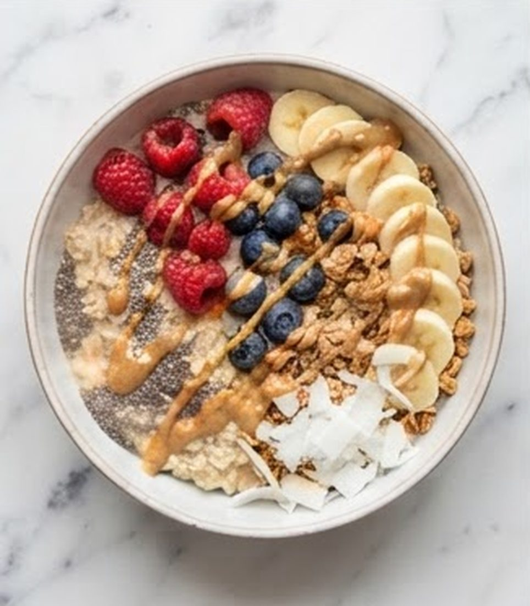
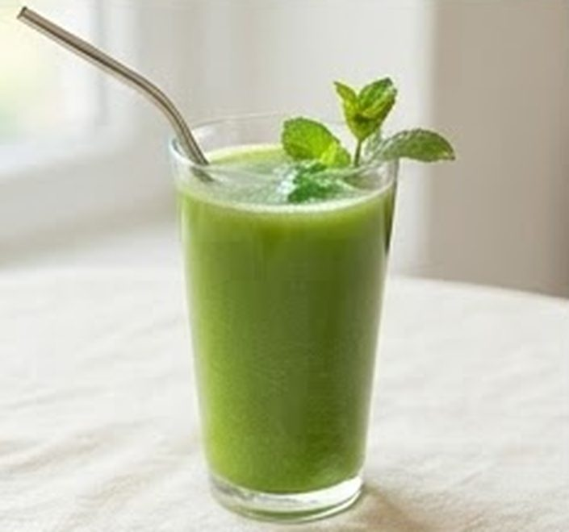
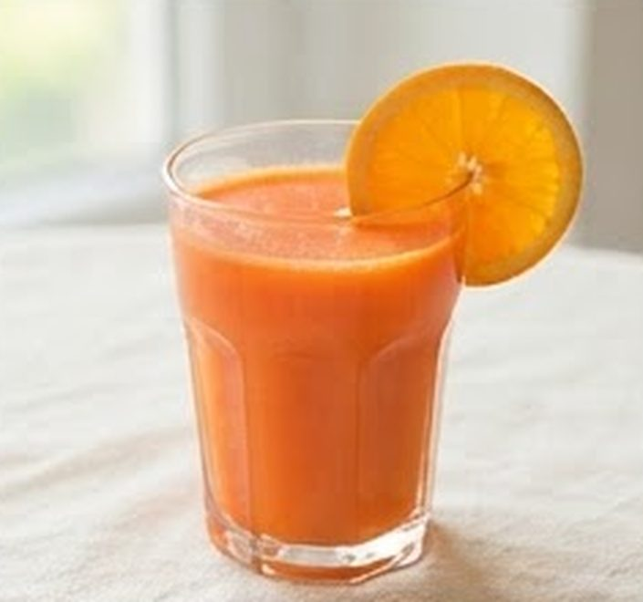
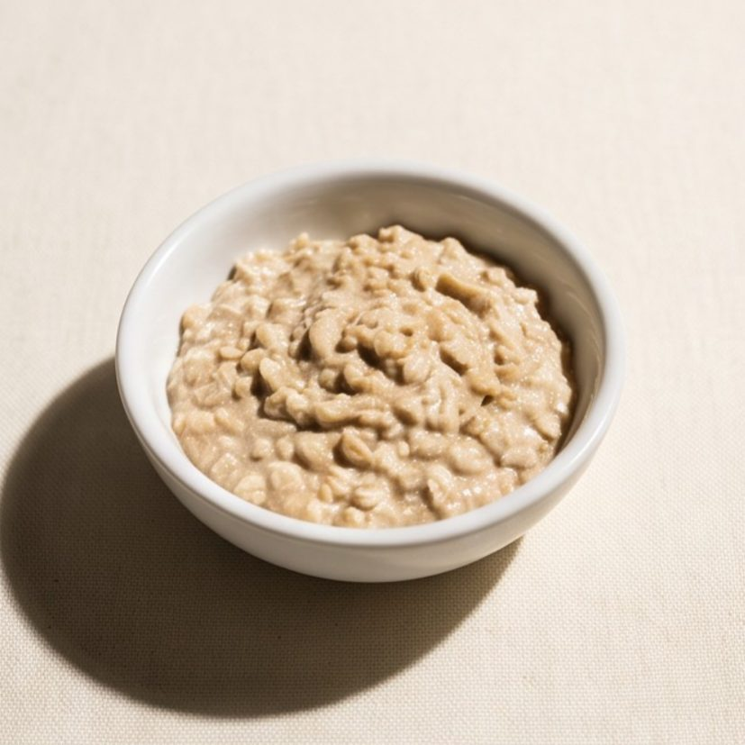

Blend or juice cucumber, green apple, a handful of mint and a squeeze of lemon. Serve over ice.

Blend carrot, orange and a small piece of ginger with a little water, then strain if you like a smoother drink.
Layer yogurt with chopped fruit, oats and a handful of seeds or nuts you can have. Add a drizzle of honey if you like.

Mix oats with milk or yogurt, leave in the fridge overnight and top with fruit in the morning.
This is general food inspiration, not medical or dietary advice. Check ingredients for allergies and speak to a doctor or dietitian about special diets.